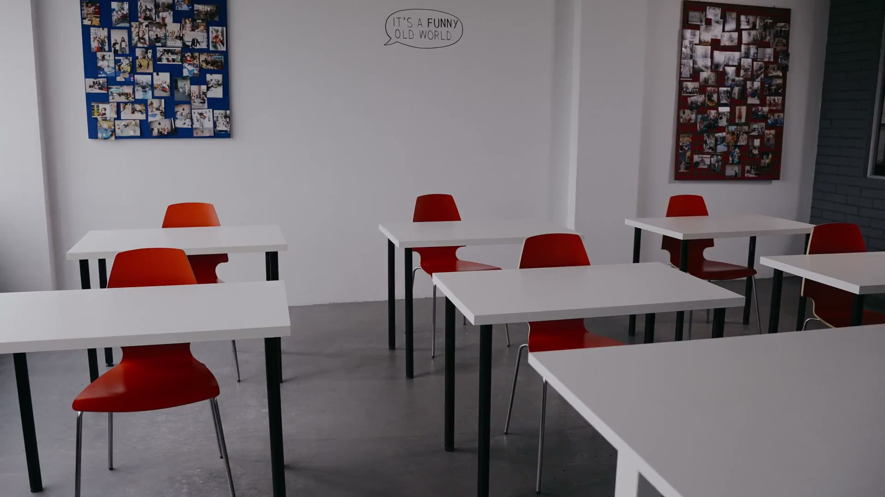
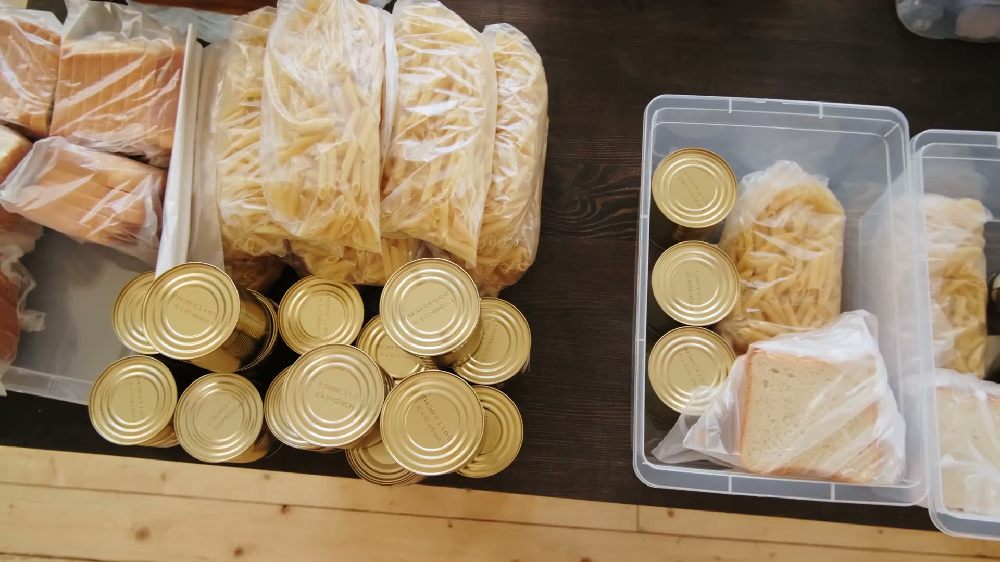
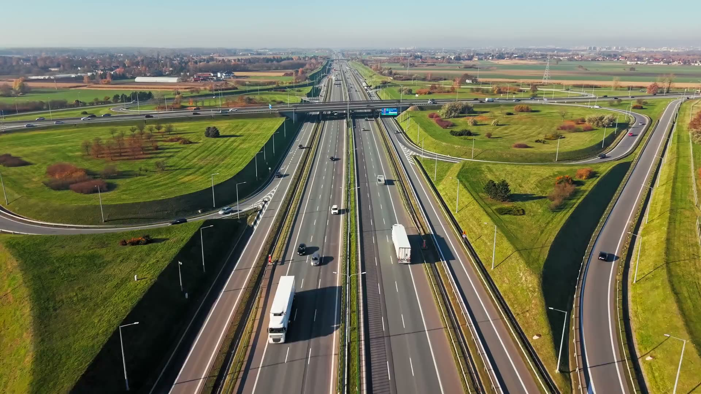

Development Tracker
Every project across Embakasi South's five wards, dated and located, tracked from planning to completion with budgets, funding sources and proof as it happens.
All Projects
Search, or filter by status, ward and category. Any filtered view can be shared as a link.
Click a ward on the map or in the list to see only its projects below. The darker the red, the more projects.
Ward boundaries are from OpenStreetMap contributors and may differ slightly from the official IEBC boundaries.
Before and After
The same place, photographed before work started and again as it stands now. Drag the handle to compare.
How to Read This Tracker
Three things to know about any project: where it stands, who paid for it, and what the numbers mean.
Where a project stands
-
Illustrative photo0
Planned
Approved, but work has not started on site.
-
 Illustrative photo0
Illustrative photo0Ongoing
Work is under way. Progress shows how far along it is.
-

Illustrative photo0Completed
Finished, and checked on site by the team.
Who paid for it

Illustrative photoPaid for by the Foundation, from donations it has received.

Illustrative photoPaid for from public funds such as the NG-CDF. We document it; we did not fund it.
 Illustrative photo
Illustrative photoPaid for by a partner or donor working alongside the Foundation.
Reading the numbers
- Progress
How much of the work is finished.
- Budget
The amount set aside for the whole project.
- Updated
When the record last changed.
 On the ground, 2022
On the ground, 2022Every record is checked on site
- 1Site visit
- 2Status set
- 3Budget attached
- Published
See what was promised 
Every project here is measured against a pledge made to residents. See where each pledge stands today.